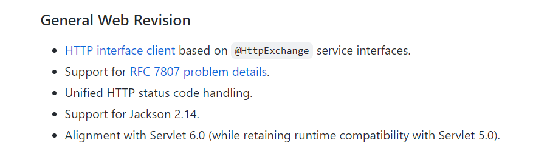
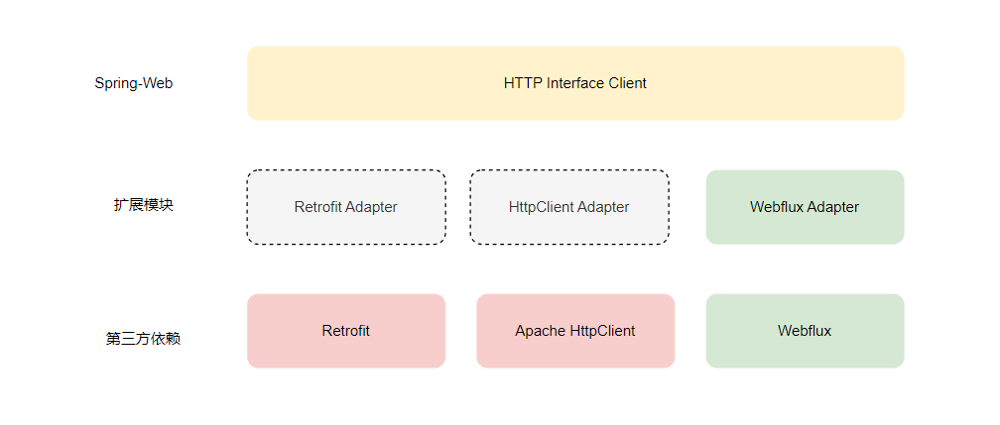

前言
Spring Cloud 在 2022.0.0 版本 Release 的时候宣布 Spring Cloud Openfeign 进入维护模式了：不再添加新特性，只处理 bug 修复、安全修复以及社区 PR 审查。
Since Spring now provides its own interface HTTP clients solution, starting with 2022.0.0, we’re going to treat Spring Cloud OpenFeign as feature complete. This means that the Spring Cloud team will no longer be adding new features to the module. We will still fix bugs and security issues, and we will also consider and review small pull requests from the community.
原因之一就是 Spring 现在已经自带了基于 Interface 的 Http 客户端解决方案，这不由得也引起了我的兴趣。
是什么？
第一个疑惑就是这个基于 interface 的 http client 到底是什么？我在 Spring6 的 release note 中找到了答案

它就是 HTTP Interface client，与 Openfeign 一样是一个声明式的 Java HTTP 网络调用框架。
目前 Http Interface Client 实现在 spring-web 模块下，它设计了专门的适配层用于适配第三方 Http 网络框架，官方目前提供了 webflux 的适配实现，未来会计划适配 RestTemplate 、Retrofit 等框架。

怎么用？
第一步：引入依赖
使用 Http Interface 的话需要引入 web 和 webflux 两个依赖
- Gradle
implementation 'org.springframework.boot:spring-boot-starter-web:3.0.0'
implementation 'org.springframework.boot:spring-boot-starter-webflux:3.0.0'
- Maven
<dependency>
<groupId>org.springframework.boot</groupId>
<artifactId>spring-boot-starter-web</artifactId>
</dependency>
<dependency>
<groupId>org.springframework.boot</groupId>
<artifactId>spring-boot-starter-webflux</artifactId>
</dependency>
第二步：定义接口
Http Interfaces 基本兼容 spring MVC 的注解，唯一特殊的就是 @RequestMapping 需要使用 @HttpExchange 替代
import lombok.Data;
import org.springframework.web.bind.annotation.PathVariable;
import org.springframework.web.bind.annotation.RequestBody;
import org.springframework.web.service.annotation.*;
import javax.validation.constraints.NotBlank;
import javax.validation.constraints.NotNull;
@HttpExchange("/users")
public interface UserRestClient {
@GetExchange("/{id}")
User get(@PathVariable("id") Long id);
@DeleteExchange("/{id}")
User delete(@PathVariable("id") Long id);
@PutExchange
User update(@RequestBody UserUpdateReq user);
@PostExchange
User create(@RequestBody UserCreateReq user);
@Data
class User {
private Long id;
private String nickname;
}
@Data
class UserCreateReq {
@NotBlank
private String nickname;
}
@Data
class UserUpdateReq {
@NotNull
private Long id;
@NotBlank
private String nickname;
}
}
第三步：使用 WebClient 注册 Bean
import org.springframework.context.annotation.Bean;
import org.springframework.context.annotation.Configuration;
import org.springframework.web.reactive.function.client.WebClient;
import org.springframework.web.reactive.function.client.support.WebClientAdapter;
import org.springframework.web.service.invoker.HttpServiceProxyFactory;
@Configuration
public class RestClientConfig {
@Bean
public UserRestClient userRestClient() {
WebClient client = WebClient.builder()
.baseUrl("http://localhost:8080")
.build();
HttpServiceProxyFactory factory = HttpServiceProxyFactory.builder(WebClientAdapter.forClient(client))
.build();
return factory.createClient(UserRestClient.class);
}
}
第四步：使用
@Service
public class UserRemoteService{
@Autowired
private UserRestClient userRestClient;
public UserRestClient.User create(UserRestClient.UserCreateReq req) {
return userRestClient.create(req);
}
// 省略其他接口...
}
目前官方支持的参数类型、注解类型、返回值类型都在文档里有说明，我在这里直接引用一下链接
- Http Interface 支持的参数类型、注解：https://docs.spring.io/spring-framework/docs/6.0.3/reference/html/integration.html#rest-http-interface-method-parameters
- Http Interface 支持的返回值类型：https://docs.spring.io/spring-framework/docs/6.0.3/reference/html/integration.html#rest-http-interface-return-values
让 @HttpExchange 的 url 参数支持配置引用
@HttpExchange 的 url 参数其实是支持配置引用的，但是需要我们主动进行配置：构建 HttpServiceProxyFactory 的时候指定一下 StringValueResolver 参数
import lombok.RequiredArgsConstructor;
import org.springframework.context.annotation.Bean;
import org.springframework.context.annotation.Configuration;
import org.springframework.core.env.Environment;
import org.springframework.web.reactive.function.client.WebClient;
import org.springframework.web.reactive.function.client.support.WebClientAdapter;
import org.springframework.web.service.invoker.HttpServiceProxyFactory;
@Configuration
@RequiredArgsConstructor
public class RestClientConfig {
private final Environment environment;
@Bean
public UserRestClient httpBinClient() {
WebClient client = WebClient.builder()
.build();
HttpServiceProxyFactory factory = HttpServiceProxyFactory.builder(WebClientAdapter.forClient(client))
.embeddedValueResolver(environment::resolvePlaceholders) // 使用 environment 来解析 url 配置
.build();
return factory.createClient(UserRestClient.class);
}
}
这样我们就可以在 @HttpExchange 中引用配置了
// 通过 SPEL 表达式引用配置项
@HttpExchange("${user-service.url}")
public interface UserRestClient {
@GetExchange("/{id}")
Json<User> get(@PathVariable("id") Long id);
}
扩展 HttpServiceArgumentResolver 支持 Query Object
虽然 Http Interface Client 支持使用 @RequestParam 来指定 Query 参数，但在查询参数多的时候我们更习惯所有参数封装成一个 Bean，就像下面这样
@HttpExchange(url = "${user-service.url}")
public interface UserRestApi {
@GetExchange
List<User> list(Query query);
@Data
class Query {
private int page = 0;
private int size = 10;
}
}
但目前 Http Interface Client 还不支持这样的参数定义，好在其提供了 HttpServiceArgumentResolver 扩展点，基于该扩展点可以实现自定义的参数类型解析。
下面就是一个简化版的 Query Object 对象参数解析实现
import lombok.RequiredArgsConstructor;
import lombok.extern.slf4j.Slf4j;
import org.springframework.cglib.beans.BeanMap;
import org.springframework.core.MethodParameter;
import org.springframework.core.annotation.AnnotationUtils;
import org.springframework.core.convert.ConversionService;
import org.springframework.lang.Nullable;
import org.springframework.stereotype.Component;
import org.springframework.util.ClassUtils;
import org.springframework.web.service.annotation.HttpExchange;
import org.springframework.web.service.invoker.HttpRequestValues;
import org.springframework.web.service.invoker.HttpServiceArgumentResolver;
import java.lang.reflect.Method;
@RequiredArgsConstructor
@Component
@Slf4j
public class QueryObjectArgumentResolver implements HttpServiceArgumentResolver {
@Nullable
private final ConversionService conversionService;
@Override
public boolean resolve(Object argument, MethodParameter parameter, HttpRequestValues.Builder requestValues) {
Method method = parameter.getMethod();
HttpExchange annotation = AnnotationUtils.getAnnotation(method, HttpExchange.class);
if (annotation == null) {
return false;
}
if (parameter.hasParameterAnnotations()) {
return false;
}
BeanMap.create(argument).forEach((key, value) -> {
// 忽略基本类型
if (value.getClass().isPrimitive() || ClassUtils.isPrimitiveWrapper(value.getClass())) {
requestValues.addRequestParameter(key.toString(), value.toString());
} else if (value != null) {
if (conversionService != null) {
requestVawlues.addRequestParameter(key.toString(), conversionService.convert(value, String.class));
} else {
requestValues.addRequestParameter(key.toString(), value.toString());
}
} else {
if (log.isDebugEnabled()) {
log.debug("Skip null value for query parameter: {}", key);
}
}
});
return true;
}
}
最后通过 HttpServiceProxyFactory 配置即可
import com.example.springdemo.extension.QueryObjectArgumentResolver;
import lombok.RequiredArgsConstructor;
import org.springframework.context.annotation.Bean;
import org.springframework.context.annotation.Configuration;
import org.springframework.core.env.Environment;
import org.springframework.web.reactive.function.client.WebClient;
import org.springframework.web.reactive.function.client.support.WebClientAdapter;
import org.springframework.web.service.invoker.HttpServiceProxyFactory;
@Configuration
@RequiredArgsConstructor
public class RestClientConfig {
private final QueryObjectArgumentResolver queryObjectArgumentResolver;
private final Environment environment;
@Bean
public UserRestClient httpBinClient() {
WebClient client = WebClient.builder()
.build();
HttpServiceProxyFactory factory = HttpServiceProxyFactory.builder(WebClientAdapter.forClient(client))
.embeddedValueResolver(environment::resolvePlaceholders)
.customArgumentResolver(queryObjectArgumentResolver)
.build();
return factory.createClient(UserRestClient.class);
}
}
其他扩展点
HttpClientAdapter：可以适配其他 http 调用库，比如 okHttp、Retrofit 等
为什么不使用 @RequestMapping 而要新增一套注解？
Spring Cloud Openfeign 基本兼容 spring-web 的注解，所以接口的定义可以同时用于实现服务端的 controller 和生成客户端的 proxy client
// 模块 rest-api 定义接口
@RequestMapping(value = "/api/users")
public interface UserRestClient {
@GetMapping("/{id}")
User get(@PathVariable("id") Long id);
@DeleteMapping("/{id}")
User delete(@PathVariable("id") Long id);
@PutMapping
User update(@RequestBody UserUpdateReq user);
@PostMapping
User create(@RequestBody UserCreateReq user);
}
// 服务端 controller
@RestController
public class UserRestController implements UserRestClient {
// 略...
}
// 客户端
@FeignClient(name = "order-api", url = "${order-api.host}")
public interface UserApiClient extends UserRestClient {
}
interface 和 controller 实现通常放在不同的模块下，比如
- UserRestApi 位于 rest-api 模块，该模块可以打包为 jar 包发布
- UserRestController 位于 application 模块，该模块是 server 端实现
user-service/
├─ rest-api/
│ ├─ src/main/java/
│ │ ├─ UserRestApi.java
├─ application/
│ ├─ src/main/java/
│ │ ├─ UserRestController
这样的好处就是，其他 JAVA 服务可以直接引用 rest-api 作为依赖项，然后进行简单的配置就能执行 API 调用了，大大的减少了开发工作量。
但是现在使用 Http Interface client 的话，接口就得定义两套路由注解了
- 一套用于服务端的 spring-mvc
- 一套用于客户端的 http interface client
@RequestMapping(value = "/api/users")
@HttpExchange("/api/users")
public interface UserRestClient {
@GetMapping("/{id}")
@GetExchange("/{id}")
User get(@PathVariable("id") Long id);
@DeleteMapping("/{id}")
@DeleteExchange("/{id}")
User delete(@PathVariable("id") Long id);
@PutMapping
@PutExchange
User update(@RequestBody UserUpdateReq user);
@PostMapping
@PostExchange
User create(@RequestBody UserCreateReq user);
}
这样看着就非常的冗余，那为什么 http interface client 要单独定义一套注解呢？
经过我不懈的寻找，终于在 github 上找到了答案，参考以下链接
- https://github.com/spring-projects/spring-framework/issues/29476
- https://youtu.be/5LNOnVJKW_4?t=1156
简单来说是因为 @RequestMapping 是为服务端而生的注解，对于 Client 端来说它并不是很精准，比如
- 在服务端可以为路径设置通配符来接受请求，但客户端调用时是不支持为路径设置通配符的
@RequestMapping的produces参数不适用于客户端
总结一句话：@RequestMapping 就不是为 http 客户端设计的。
总结
Http Interface Client 作为一个新的框架，它的优点和缺点都很明显
优点
- 没有历史包袱，设计简洁，扩展能力优秀
- 默认支持 reactive
- 天然适配 spring 生态，毕竟出自 spring 官方团队
- 默认支持 AOT，毕竟 native build 是未来的方向
缺点
- 生态不如 Spring Cloud Openfeign 等老牌框架丰富，比如目前网络调用层默认只有 webflux 的实现、默认不支持 Query Object 等
- 缺少工程最佳实践，这个只能靠时间去踩坑、摸索